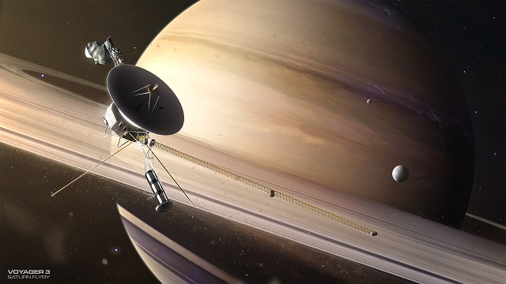
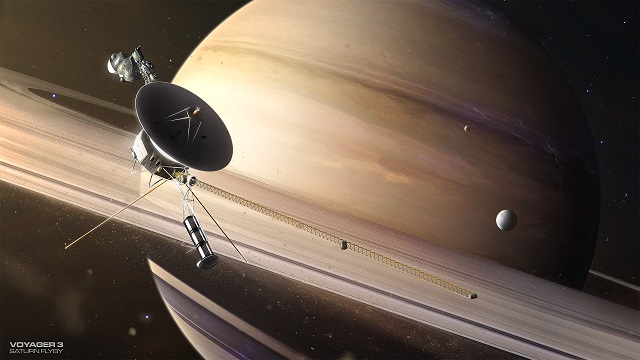

The discovery and exploration of the solar system
Did you know that people used to think that everything revolved around the earth? It was a pretty reasonable theory, as the sun and stars all appeared on the horizon and traveled across the sky. However, we now know this is not the case. Today, we have had astronauts on the moon, sent spacecraft past the furthest planets, and have telescopes that can see millions of light years away. So how did we come this far? This section will be about the history of human exploration of the solar system.
Early history
For many thousands of years, astronomers did not recognize the existence of a Solar System. Most believed Earth was stationary at the center of the Universe and categorically different from the divine or ethereal objects that moved through the sky. In the 16th century, Nicolaus Copernicus developed a theory the that the sun was in the middle instead of the earth, the heliocentric system. In the 17th century, Galileo Galilei, Johannes Kepler, and Isaac Newton developed a modern understanding of physics that supported that theory. Most people didn’t believe it, and it took tens of years for people to accept the idea. In fact, when Galileo tried to convince people, the government arrested him!
Telescopes
Very early in history, people discovered the Planets from Mercury to Saturn. These were close enough to be seen with human eyes. In 1608, Hans Lippershey invented the telescope, which let people see much further. Over time, better and better telescopes were made. In 1781 William Herschel discovered the planet of Uranus, and Giuseppe Piazzi discovered the dwarf planet Ceres in 1801. In 1846 Neptune was discovered by Urbain Le Verrier, not by using a telescope but by observing the orbit of Uranus and using math. In 1930, Pluto was discovered, and in 2005, Eris. Many more moons, comets, and other objects were discovered, and we could see more detail on already discovered planets.
Space age
In 1957, the Russian space probe Sputnik 1 became the first probe sent to space, starting the space age. Since then, being able to leave Earth has helped scientists do much more research. We have sent powerful telescopes to space where they won’t be blocked by the atmosphere. We have sent space probes to fly by or land on all the planets, such as Mars rovers. We have even sent people to the moon where they can conduct tests that would be very hard for a robot to do.
 
